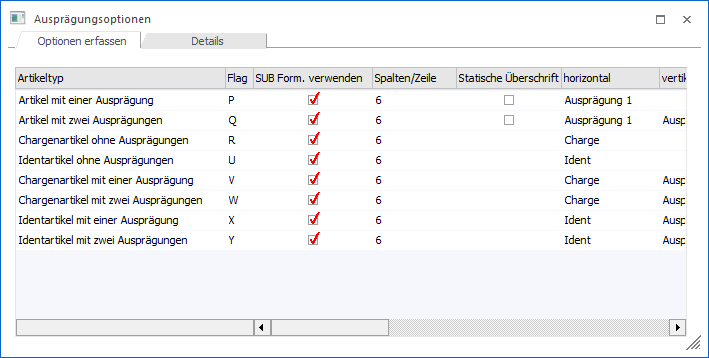
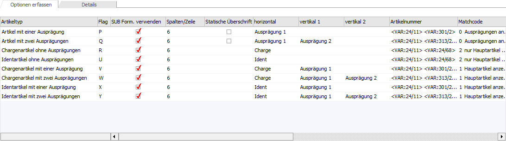
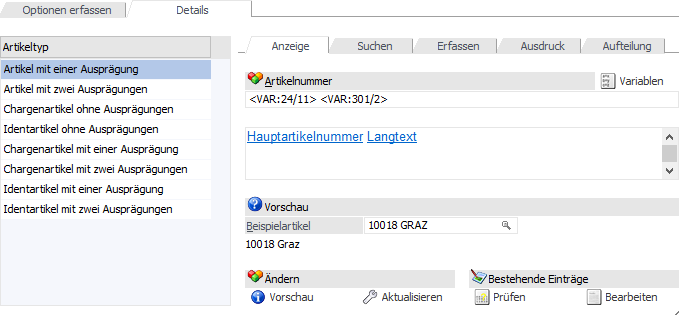
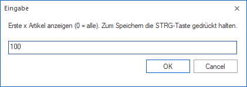
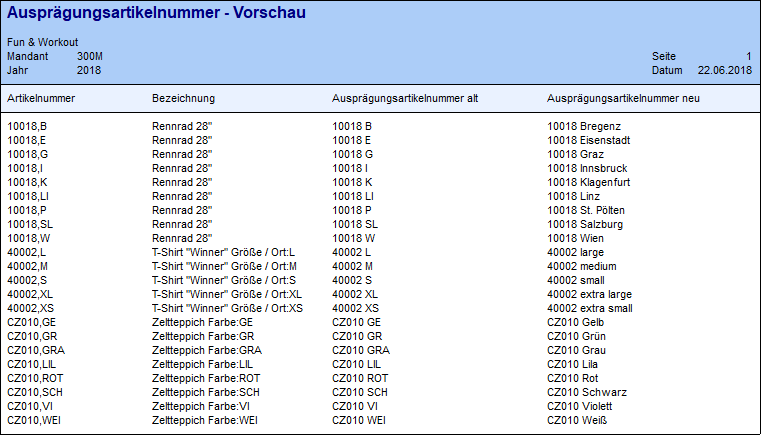
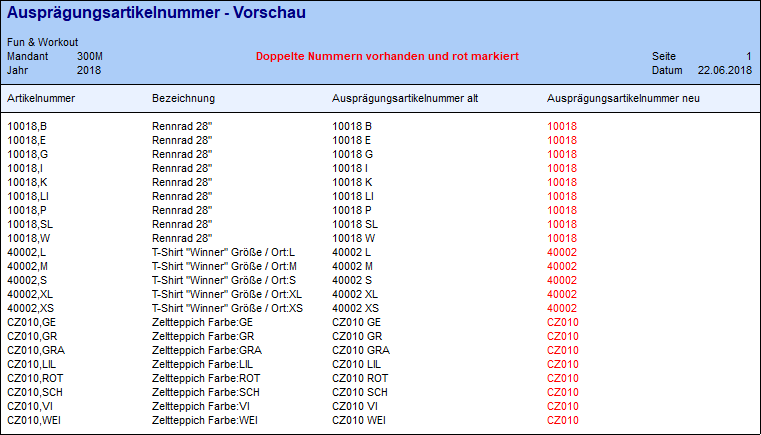
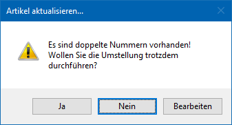

Im Menüpunkt…
1 WinLine FAKT
1 Stammdaten
1 Ausprägungen
1 Ausprägungsoptionen
… können folgende Elemente für Ausprägungsartikel definiert werden:
ü Anzeige der Ausprägungsartikelnummer
ü Anzeige im Artikelmatchcode und in der Autovervollständigung
ü Anzeige in der Belegerfassung
ü Darstellung im Ausdruck
ü Anzeige und Bearbeitung im Fenster "Ausprägung erfassen"
Hinweis
Standardmäßig wird das Fenster in einem "Lesemodus" geöffnet, d.h. es können die bestehenden Einstellungen kontrolliert, Änderungen allerdings nicht durchgeführt werden. Hierfür muss zunächst mit Hilfe des Buttons "Bearbeiten" der "Bearbeitungsmodus" aktiviert werden. Eine Ausnahme bilden hierbei die Einstellungsmöglichkeit für den Ausdruck und die Option "Langbezeichnung im Erfassen", welche auch im "Lesemodus" geändert werden können.

Die Ausprägungsoptionen können jeweils pro Artikeltyp (Art der Ausprägung) definiert werden. Hierbei stehen 2 Varianten zur Verfügung:
ü Tabellensicht (Register "Optionen erfassen")
ü Detailansicht (Register "Details")
Register "Optionen erfassen"

In dem Register "Optionen erfassen" werden alle Einstellungen in Form einer Tabelle dargestellt und können wie gewünscht definiert werden. Hierbei stehen die folgenden Spalten zur Verfügung:
Ø Flag / SUB Form. Verwenden / Spalten/Zeile / Statische Überschrift / horizontal / vertikal 1 / vertikal 2
Nähere Informationen zu den aufgeführten Spalten entnehmen Sie bitte dem Kapitel Ausprägungsoptionen - Register "Details" - Unterregister "Ausdruck".
Ø Artikelnummer
Nähere Informationen zu der aufgeführten Spalte entnehmen Sie bitte dem Kapitel Ausprägungsoptionen - Register "Details" - Unterregister "Anzeige".
Ø Matchcode / mit einer Ausprägung / mit Chargennummer / mit Identnummer / mit zwei Ausprägungen / mit einer Ausprägung und Chargennummer bzw. Identnummer / mit zwei Ausprägungen und Chargennummer bzw. Identnummer
Nähere Informationen zu den aufgeführten Spalten entnehmen Sie bitte dem Kapitel Ausprägungsoptionen - Register "Details" - Unterregister "Suchen".
Ø Belegerfassen / Positionsnummern
Nähere Informationen zu den aufgeführten Spalten entnehmen Sie bitte dem Kapitel Ausprägungsoptionen - Register "Details" - Unterregister "Erfassen".
Ø Vorlage Verkauf / Vorlage Einkauf / Vorlage Produktion-Auftragsanlage / Vorlage Produktion-Endmeldung / Langbez. im Erfassen
Nähere Informationen zu den aufgeführten Spalten entnehmen Sie bitte dem Kapitel Ausprägungsoptionen - Register "Details" - Unterregister "Aufteilung".
Register "Details"

Im Register "Details" werden alle Einstellungen in Form von Unterregistern dargestellt, welche in den nachfolgenden Kapiteln Detail erläutert werden.
ü Unterregister "Anzeige"
In dem
Unterregister "Anzeige" kann pro Artikeltyp die Ausprägungsartikelnummer
definiert werden.
ü Unterregister "Suchen"
In dem
Unterregister "Suchen" kann pro Artikeltyp hinterlegt werden, wie die
Ausprägungsanzeige im Artikelmatchcode erfolgen soll und welche Ausprägungstypen
in der Autovervollständigung darzustellen sind.
ü Unterregister "Erfassen"
In dem
Unterregister "Erfassen" kann pro Artikeltyp hinterlegt werden, ob die
Ausprägungen in der Belegerfassungstabelle direkt angezeigt werden sollen und
wie die Positionsnummernvergabe erfolgen soll.
ü Unterregister "Ausdruck"
In dem
Unterregister "Ausdruck" kann u.a. pro Artikeltyp hinterlegt werden, wie der
Ausdruck von Ausprägungen erfolgen soll.
ü Unterregister "Aufteilung"
In dem
Unterregister "Aufteilung" kann u.a. hinterlegt werden, bei welchem Artikeltyp
welche Vorlage für die Bearbeitung in dem Fenster "Ausprägungen erfassen"
herangezogen werden sollen.
Buttons
Ø Ok
Durch Anklicken des Buttons "OK" bzw. der Taste F5 werden die vorgenommenen Einstellungen gespeichert.
Ø Ende
Durch Drücken des Buttons "Ende" bzw. der Taste ESC wird der Programmbereich geschlossen und vorgenommene Einstellungen verworfen.
Ø Bearbeiten
Bei Anwahl dieses Buttons wird der "Bearbeitungsmodus" aktiviert, d.h. es können alle Ausprägungsoptionen geändert werden.
Hinweis
Standardmäßig werden die Ausprägungsoptionen in einem "Lesemodus" geöffnet, d.h. es können die bestehenden Einstellungen kontrolliert werden, ein Ändern ist nicht möglich. Eine Ausnahme bilden hierbei die Einstellungsmöglichkeit für den Ausdruck und die Option "Langbezeichnung im Erfassen", welche auch im "Lesemodus" geändert werden können.
Ø Standardeinstellungen
Durch Anwahl des Buttons "Standardeinstellungen" werden die Ausprägungsoptionen in gewissen Bereichen auf einen vordefinierten Standard zurückgesetzt (die folgende Aufzählung bezieht sich auf das Register "Details", wirkt sich aber natürlich auch entsprechend auf die Tabelle des Registers "Optionen erfassen" aus).
Unterregister "Anzeige"
ü Artikel mit einer Ausprägung: Hauptartikelnummer, Langtext der Ausprägung
ü Artikel mit zwei Ausprägungen: Hauptartikelnummer, Langtext der Ausprägung 1,
Langtext der Ausprägung 2
ü Chargenartikel ohne Ausprägung: Hauptartikelnummer, Chargennummer
ü Artikel mit Identnummern: Hauptartikelnummer, Identnummer
ü Chargenartikel mit einer Ausprägung: Hauptartikelnummer, Langtext der Ausprägung,
Chargennummer
ü Chargenartikel mit zwei Ausprägungen: Hauptartikelnummer, Langtext der Ausprägung 1,
Langtext der Ausprägung 2, Chargennummer
ü Identartikel mit einer Ausprägung: Hauptartikelnummer, Langtext der Ausprägung,
Identnummer
ü Identartikel mit zwei Ausprägungen: Hauptartikelnummer, Langtext der Ausprägung 1,
Langtext der Ausprägung 2, Identnummer
Unterregister "Suchen" - Artikelmatchcode
ü Artikel mit einer Ausprägung: 0 = Ausprägungen anzeigen
ü Artikel mit zwei Ausprägungen: 0 = Ausprägungen anzeigen
ü Chargenartikel ohne Ausprägung: 2 = Nur Hauptartikel anzeigen
ü Identartikel ohne Ausprägung: 2 = Nur Hauptartikel anzeigen
ü Chargenartikel mit einer Ausprägung: 1 = Hauptartikel anzeigen und Ausprägungen suchen
ü Chargenartikel mit zwei Ausprägung: 1 = Hauptartikel anzeigen und Ausprägungen suchen
ü Identartikel mit einer Ausprägung: 1 = Hauptartikel anzeigen und Ausprägungen suchen
ü Identartikel mit zwei Ausprägung: 1 = Hauptartikel anzeigen und Ausprägungen suchen
Unterregister "Suchen" - Autovervollständigung
Bei allen Artikeltypen werden alle Ausprägungen angezeigt.
Unterregister "Erfassen" - Belegerfassen
Bei allen Artikeltypen wird die Option "Anzeige" deaktiviert.
Ø Vorschau (alle)
Über den Button "Vorschau (alle)" wird am Bildschirm eine Vorschau über die neue Ausprägungsartikelnummer ausgegeben, wobei alle Artikeltypen berücksichtigt werden. Sollte es zu doppelten Ausprägungsartikelnummern kommen, dann wird auf dieses innerhalb der Liste hingewiesen.
Hinweis
Vor Erstellung der Vorschau wird abgefragt, wie viele Zeilen in der Liste (pro Artikeltyp) ausgegeben werden sollen.

Beispiel ohne doppelte Ausprägungsartikelnummern

Beispiel mit doppelten Ausprägungsartikelnummern

Ø Artikelnummern aktualisieren (alle)
Durch Anwahl des Buttons "Artikelnummern aktualisieren (alle)" wird die Ausprägungsartikelnummer bei allen Artikeltypen erzeugt.
Hinweis
Wenn der Button "Prüflauf" aktiviert ist, dann erfolgt vor der Erzeugung der Ausprägungsartikelnummer ein Prüflauf, ob z.B. durch manuelle Eingaben oder ungünstige Datenkonstellationen doppelte Nummern erzeugt werden würden.

ü Ja
Die Aktualisierung wird
durchgeführt, wobei auch doppelte Ausprägungsartikelnummern erzeugt werden.
Achtung
Doppelte Nummern sollten umgehend bereinigt werden (siehe Registerbutton "Bearbeiten"), da sonst z.B. eine korrekte Artikelauswahl per Autovervollständigung nicht möglich ist.
ü Nein
Die Aktualisierung wird
nicht durchgeführt.
ü Bearbeiten
Es wird das Programm
Ausprägungsnummer bearbeiten
geöffnet und die Artikel mit doppelter Ausprägungsartikelnummer angezeigt (die
Option "nur doppelte anzeigen" ist automatisch aktiviert).
Ø Prüflauf
Bei Aktivierung des Buttons "Prüflauf" wird bei jeder Erzeugung der Ausprägungsartikelnummer (Button "Artikelnummern aktualisieren (alle)" oder Registerbutton "Aktualisieren") zunächst ein Prüflauf durchgeführt, ob doppelte Nummern erzeugt werden würden.